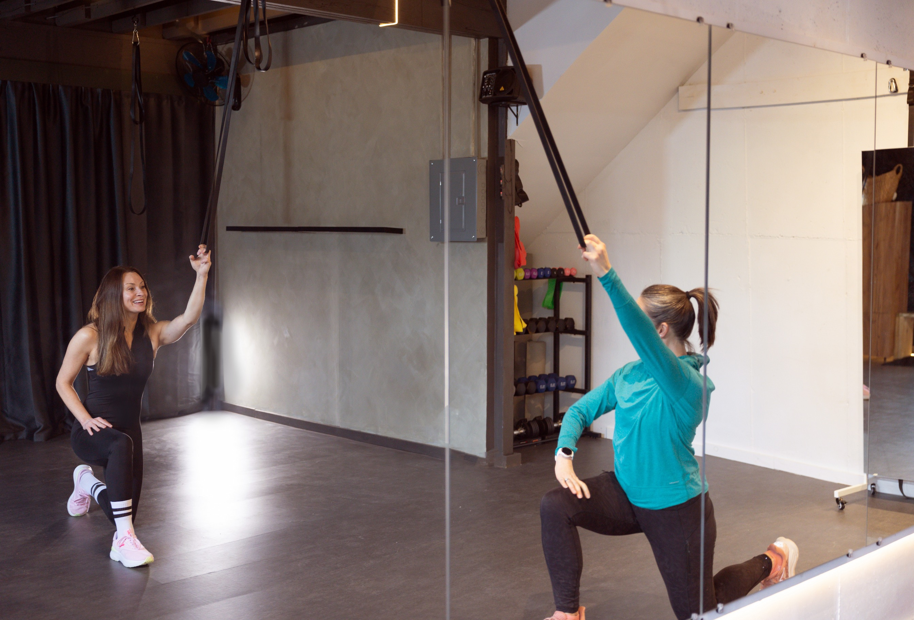
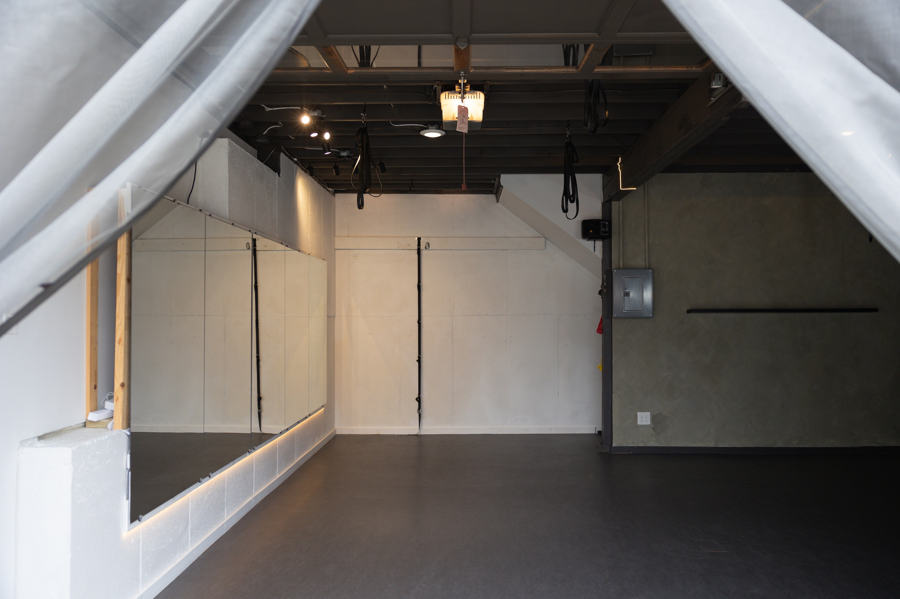
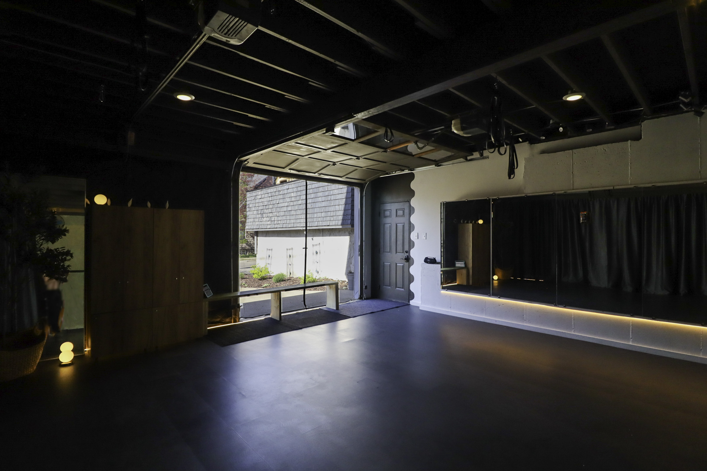

Progress looks different for everyone. Rebuilding your foundation? Start with Kinetix to restore range and function. Craving intensity? Anabolix delivers that beat-driven burn. Every class is intentional — grounded in science, fueled by rhythm.



Yes, it's technically a garage. And it's also one of the best workouts you'll find in 400 square feet. The studio is tucked inside a converted carriage house right here in Heritage Hill. Think small-scale, design-driven, and thoughtfully equipped — proper ventilation, soft Marmoleum flooring, and warm lighting that feels more boutique than basement. Some might call it unexpectedly elevated. Classes are small, scheduled, and intentionally personal — because this is training built for real people, not crowds.